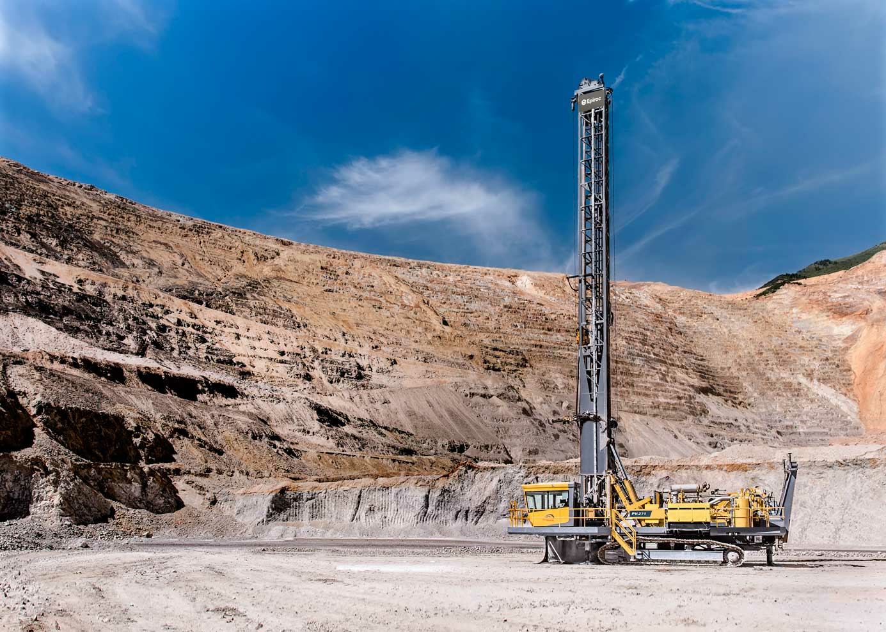

PERFORACIÓN
Es la operación que se realiza con la finalidad de abrir tiros en el macizo rocoso para luego
poder colocar explosivos. Para realizar esta tarea se lleva a cabo diseño de mallas de perforación
basándose previamente en un estudio de mecánica de rocas.

VOLADURA
Es la operación para fracturar el macizo rocoso buscando separarlo haciendo uso de explosivos. Para ello
es necesario seleccionar el tipo de explosivo que vamos a usar basándose previamente
en un estudio de mecánica de rocas.